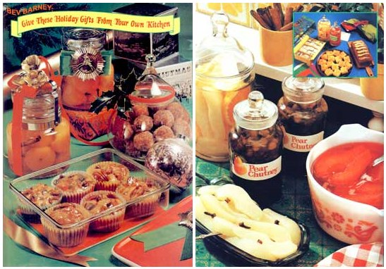

Very few store-bought gifts carry the warmth, the tenderness, the "I've been thinking about you" feeling that just naturally goes with homemade goodies whipped up right there in your own kitchen.
Do-it-yourself holiday gifts of food come in all sizes, shapes, and colors . . . and all flavors! Some are for serving on the very day you give them, and others are for stashing away until Christmas or New Year's. (I've found that cakes and breads are particularly welcome when delivered to a special friend or neighbor for Christmas Eve supper or a Christmas morning brunch. And more casual friends, a child's favorite teacher, etc., always seem pleased and flattered to receive home-brewed candies, cheese spreads, and homemade jam ... especially when the presents are packaged imaginatively in a reusable container.)
And don't try to keep all this holiday fun to yourself! The recipes listed here have been specially chosen because I've found them so easy to prepare that the whole family can take part in the festivities!
EASY BEEF JERKY
Trim all the fat from as much beef flank steak as you care to prepare (and start with lots, since the meat will shrink a great deal as it dries). Cut the steak lengthwise (with the grain) into long, thin strips that are no more than 1/8 inch thick. Toss with 1/2 cup soy sauce that contains 1/2 teaspoon each of garlic salt and lemon pepper. Then place the strips close together-but not overlapping-in a single layer on a rack over a baking sheet, and bake in a slow oven (150 to 175°F) overnight or 10 to 12 hours. Store the finished jerky at room temperature in an airtight container. If all the fat was trimmed away from the meat in the beginning, this jerky will keep indefinitely.
HOLIDAY APPETIZER
Toast several strips of thoroughly dried jerky (see above) in a hot oven (450°F) until the snack is hot and breaks easily. Then crumble the dried and toasted meat into small pieces and serve as tasty tidbits at parties, potlucks, and on camping trips. Or package in small, decorated glass jars (try designing your own label, or pasting a magazine's holiday scenes on the containers) and give to your friends. And, as a special added thought for the recipients who cook, it's nice to include the recipe!
SPICY SEASONED SALT
Combine 1/4 teaspoon dill weed, 1 teaspoon onion powder, 1 teaspoon dried thyme, 1 teaspoon garlic powder, 1 teaspoon curry powder, 1-1/2 teaspoons dried oregano, 2 teaspoons dry mustard, 2 teaspoons paprika, and I cup coarse salt and mix well. Place in an airtight container, seal tightly,. and store for three to six months in a cool place (so the flavors can blend together). Use in your own holiday recipes ... or pour into individual gift salt shakers, attach "From the Kitchen of Your Name" labels, and give to your friends.
SPECIAL NOTE: Many of the ingredients in this recipe can be grown in your own garden for an added personal touch. And, if you go that far into the herb business, why not go just a little farther ... and start a few mini-herb gardens early enough in the year so you'll have some to give as Christmas presents? Place seeds or cuttings in all-purpose soil in threeinch pots, set in a sunny window in a tray that contains water and small rocks (the water's level should be below-never touching-the bottoms of the pots), and keep the soil moist. Chives-which can be used to flavor all kinds of soups, salads, and other dishes-grow from seeds very quickly and make especially nice gifts.
BRANDIED BUTTER-CHEESE SPREAD
Grate 1/2 pound sharp cheddar cheese and 1/2 pound sharp processed cheddar cheese food into a bowl. Blend in one package (8 ounces) of cream cheese and 1/2 cup (1 stick) of soft butter. Then work in 1/4 cup of brandy, 1 teaspoon of curry powder, 1 teaspoon of Worcestershire sauce, and 6 drops of hot pepper sauce and blend the mixture until it's smooth. Spoon into brandy snifters, parfait glasses, or other festive containers and refrigerate until "gifting" time. Men, in particular, seem to go for the curry-and-brandy flavor that makes this spread unique.
CHEERY-BEERY CHEESE SPREAD
Open one can or bottle (12 ounces) of beer and let it stand while you grate 1-1/2 pounds (6 cups) of sharp cheddar cheese and crumble 1/4 pound of blue cheese. Mix the two cheeses together with 1/2 teaspoon of seasoned salt and 1 teaspoon of dry mustard ... then blend in 1/4 cup (1/2 stick) of softened butter, 2 tablespoons of finely minced green onions, 2 teaspoons of Worcestershire sauce, and 1/8 teaspoon of red pepper sauce. Add the beer gradually, while you beat the whole creation with an electric mixer until it's creamy. This spread is quite thin when first made, but sets up as it chills. Keep it refrigerated.
CHEESE'N'WINE SPREAD
Place 1/2 pound of blue cheese and one package (8 ounces) of cream cheese in a bowl and mash them with a fork. Gradually add I cup (1/2 pint) of dairy sour cream and blend the resulting mixture until it's smooth. Then add 2 tablespoons of chopped parsley, 2 tablespoons of sherry wine, a dash of cayenne pepper, 1 tablespoon of very finely minced green onion, 1/2 teaspoon Worcestershire sauce, 1/4 teaspoon garlic salt, and 1/4 teaspoon seasoned pepper. Mix well. This spread keeps well in the refrigerator and should be made several hours before it's served, so that its flavors will have time to blend.
HEAD CHEESE
Ask your butcher to trim a pig's head for you (he should remove the eyes, the nose, the internal ear, the teeth, and the hair), and to save you one set of pig's feet. Pull out the sinews and sear the feet. Then scrape and clean both the head and the feet, cover with water, add 3 or 4 onions and spices to taste, and cook until the meat falls off the bones (about two hours). Remove from heat, bone and dice (or put the pork through a grinder). Strain broth, add meat (and more seasonings, if desired), cool, and pour into molds that have been rinsed in cold water. Keep refrigerated.
TOMATO KETCHUP
This one is just a little different from the usual holiday homemade gifts of food ... but delightful (partly because you took the time to make it).
Cook 1/2 peck of tomatoes, 3 red peppers, and 2 minced onions together (without adding water) until they're soft and mushy. Then put the pulpy mass through a strainer or sieve and, for every 4 quarts of the strained mixture, add 2 tablespoons of salt, 1/4 cup of honey, and (in a cheesecloth bag) 2 teaspoons of dry mustard, 1-1/2 teaspoons of celery seed, 1 tablespoon of whole allspice, 1 tablespoon of cinnamon, 1 tablespoon of cloves, and 1 tablespoon of paprika. Cook rapidly for about one hour, then add 2 cups of vinegar and continue cooking until the mixture is thick. Remove the bag of spices, pour the ketchup into hot, sterilized jars, seal the containers at once, and process them for 10 minutes in a boiling (212°F) water bath.
CORN RELISH
Slice the kernels from 6 ears of cooked, fresh corn (or use medium can of well drained whole kernel corn). Add 1/2 of a medium green pepper (chopped), 3 to 5 chopped celery stalks, 1 chopped onion, 2-1/2 tablespoons of chopped pimento, 2-1/2 tablespoons of white vinegar, 21/2 teaspoons of salt, 1 teaspoon of dry mustard, 1 teaspoon of pepper, and 2/3 cup of olive oil. Stir together and allow to stand for 4 to 6 hours to mellow. Then cover and store in a refrigerator. This relish keeps well for at least a month.
BEEF SUET MINCED PIE
Line a pie plate with pastry and cover with 1 cup of chopped beef suet spread out into an even layer. Spread 1 cup of brown or maple sugar or 3/4 cup of honey over the suet and, if desired, add a layer of either 1 cup of chopped tart apples or 1 cup of raisins. Then mix 3 tablespoons of vinegar with 3 tablespoons of water and pour over all. Cover with pastry and bake in a hot oven.
FRUIT-'COT CAKES
Combine 3 cups of unsifted all-purpose flour, 1 cup of honey, 1 teaspoon salt, 1 teaspoon baking powder, 2 teaspoons ground cinnamon, 1 teaspoon ground nutmeg, 1/2 cup orange juice, 1/2 cup brandy (or water), 1 cup salad oil, 1/4 cup light corn syrup, and 3 eggs in a large mixer bowl. Blend for half a minute on low speed while you occasionally scrape the bowl ... then beat at high speed for three minutes (while, again, you scrape the bowl occasionally).
Stir in 1 cup of dark seedless raisins, 2 cups of diced dried California apricots, 1 pound (2 cups) of mixed candied fruits, and 2 cups of pecan halves ... and spoon the batter into three dozen 2-1/2-inch muffin pans (or six-ounce custard cups) lined with paper baking cups. Bake in 275'F oven for 65 to 70 minutes or until a toothpick comes out clean when inserted into the center of one of the cakes.
Allow the fruitcakes to cool in their pans for five minutes, then remove them to a rack and let them cool thoroughly. Finally, heat 1/3 cup of light corn syrup in a small pan, brush it over the tops of the cakes, and store them -covered with a brandy-soaked cheesecloth-in a cool place in tightly closed containers for up to two weeks. If you intend to keep the cakes longer, freeze them in tightly covered containers.
VARIATIONS: The batter for this recipe may also be baked in small (about 4 inches tall and 2-1/2 inches across) clean food cans. Grease the containers generously, fill 2/3 full with batter, and bake in a 275°F oven for I to 1-1/2 hours, or until the fruitcakes test done. If you like, you can also bake Fruit'Cot batter for 2-1/2 to 3 hours in two 9" X 5" loaf pans.
APRICOT SNOWBALLS
Use a rolling pin to crush 2 cups of cornflakes, bran, or wheat flakes between two sheets of wax paper. Then stir the crushed flakes, 1/3 cup of diced pitted dates, 2/3 cup of diced dried California apricots, and 1/2 cup of chopped pecans together in a large bowl until they're well mixed. Melt 1/4 cup of honey and 3 tablespoons of butter or margarine together in a small pan, and blend in 1 teaspoon of vanilla. Pour the blend over the cornflake mixture, mix thoroughly, and chill 30 minutes. Use 1 tablespoon of the chilled recipe to form each ball, roll the balls in granulated sugar (if desired), and garnish each one (there'll be about 30) with a strip of dried apricot, or a red glace' cherry half. Serve immediately, cover and chill until needed, or pack the Apricot Snowballs inside a candy jar or decorative bowl and carry to your favorite neighbor.
BRANDIED'COTS
Drain two Announce cans of whole apricots and reserve 2 cups of the syrup. Combine the syrup in a medium-sized saucepan with 3/4 cup of brandy, 2 broken cinnamon sticks, and 6 whole cloves. Bring to a boil, reduce heat, and simmer uncovered for 15 minutes. Then pour the hot syrup over the drained apricots in a bowl. Cover and chill about 3 or 4 hours or until serving time.
ROSEY PEARS
Drain two 29-ounce cans of Bartlett pear halves and reserve the syrup. Bring the syrup to a boil with 1/2 cup of cinnamon candies and 1/4 teaspoon of whole cloves. Simmer 5 minutes, then add the pear halves and 2 tablespoons of lemon juice. Simmer 5 minutes more and chill. Rosey Pears keep well for two weeks when refrigerated and they're good with pork and lamb.
RELISH PEARS
Drain two 29-ounce cans of Bartlett pear halves and reserve one cup of the syrup. Combine the syrup with 3/4 cup of salad oil, 1/3 cup of vinegar, 1-1/4 teaspoons of salt, 2 tablespoons of capers, 2 tablespoons of chopped pimento, 3 tablespoons of lemon juice, and I sliced small onion. Pour the mixture over the pear halves and chill. If covered and stored in the refrigerator, Relish Pears will keep for two weeks. Serve as a meat accompaniment.
SPICY PICKLED PEARS
Drain one 29-ounce can of Bartlett pear halves and reserve 1 cup of the syrup. Mix the reserved syrup with 3/4 cup of honey, 1/4 cup of vinegar, 1 teaspoon of whole cloves, and 1 stick of cinnamon. Simmer 10 minutes, then add the pear halves (cut into lengthwise slices), and heat thoroughly. Refrigerate several hours and serve with meat or poultry.
PIQUANT PEAR CHUTNEY
Drain and dice one 29-ounce can of Bartlett pears and reserve 1/2 cup of the syrup. Then combine the diced pears, the reserved Syrup, 1 cup of golden raisins, 3/4 cup of honey, 1/2 cup of vinegar, the grated peel of 1 orange, 1 tablespoon of chopped crystallized ginger, 1 minced clove of garlic, 1 tablespoon of grated onion, 1/2 teaspoon of salt, 1/4 teaspoon of cinnamon, 1/4 teaspoon of cloves, and 1/8 teaspoon of cayenne pepper. Cook slowly until thick (about 20 to 30 minutes) while you stir the mixture frequently to prevent it from sticking. Pour the hot chutney into heated jars (leave 1/4-inch head space), tighten caps, and process 10 minutes in a boiling water bath. The three 1/2-pint containers that this recipe yields are delicious with chicken or lamb.
ORANGE-SCENTED PEARS
Combine one 29-ounce can of undrained Bartlett pear halves with 1 unpeeled, sliced orange and 1/2 cup of orangeflavored liqueur. Cover and refrigerate for several hours, then serve as chilled dessert (with or without ice cream) or heat and serve over crepes.
PEAR HONEY BREAD
Drain a 29-ounce can of Bartlett pear halves, save one cup of the syrup, and chop all but two of the halves into fine pieces. Then combine the cup of syrup with 2/3 cup of brown sugar, 3/4 cup of honey, 1/4 cup of salad oil, 2 eggs, and 2 teaspoons of grated lemon peel. Stir in the chopped pears and 3/4 cup of chopped pecans. Then sift together 4 cups of allpurpose flour, 3 teaspoons of baking powder, 1 teaspoon of baking soda, and 1-1/2 teaspoons of salt. Add the flour mixture to the pear mixture and stir just until they're blended ... then pour into two greased 4-1/2" X 8-1/2" loaf pans. Cut the two reserved pear halves into slices, arrange them over the top of the batter, and bake the loaves of bread at 350'F for 50 to 60 minutes or until a toothpick inserted into their centers comes out clean. Remove loaves from pans and let them cool. For the best flavor, wrap this bread in foil and let it stand overnight or longer before serving. Pear Honey Bread will keep up to a week.
BANANA JAM
This is really one of my favorite holiday treats. Boil 2-1/4 cups of honey with 3 cups of water for 12 minutes. Then add the juice of 3 lemons, the rind of the lemons (cut into thin slices), 8 mashed ripe bananas, 1 piece of whole dried green ginger, and 3 or 4 cloves. Cook slowly for 45 minutes as you stir the mixture to keep it from burning. When the jam turns light yellow and becomes thick, remove the ginger, pour the jam into glasses, and add paraffin seals and lids. This recipe makes about seven 8-ounce glasses.
QUICK HOLIDAY JELLY
Combine 2 cups of port wine, 1 cup of bottled grape juice, 1/4 cup of strained lemon juice, and one package (3 ounces) of powdered pectin in a deep and large saucepan. Heat to boiling, stir in 2-3/8 cups of honey, let the mixture come to a full rolling boil, and boil it hard for two minutes. Remove the jelly from the heat and allow it to stop boiling ... then skim and ladle the jelly into sterilized glasses (or decorative mugs, glasses, or jars if you're preparing holiday gifts). Sea] with paraffin. Yield: 5 glasses.
CANDY CAKE
Cream 1 cup of butter or margarine and 1-1/2 cups of honey until they're fluffy. Then beat in 5 eggs-one egg at a time-and stir in 1 tablespoon of vanilla, 1/2 cup of buttermilk, and 1/2 cup of cream sherry. Mix I cup of cut-up dates, 1 pound of cut-up candy orange slices, 1 cup of chopped nuts, 1cup (a 4-ounce can) of coconut, and 1/2 cup of sifted all. purpose flour together in another bowl. In yet another bowl, sift together 3-1/2 cups of all-purpose flour, 1/2 teaspoon of baking soda, and 1 teaspoon of salt. Add the flour-soda-salt mixture to the creamed butter and honey and blend until smooth. Then stir in the candy mixture, spoon into two wellgreased 9" X 5" X 2" loaf pans, and bake in a 325°F oven for one hour.
This recipe is usually a big hit with folks who don't ordinarily enjoy more traditional fruitcakes and men, in particular, go for it whenever it's served. Wrap this Candy Cake in foil or plastic wrap and tie it with a ribbon. It keeps well and freezes well, so don't be afraid to make it ahead. One tip, though: Warm orange slices tend to stick to a knife ... so cut this cake only when it's cool.
CHRISTMAS CANDIES
Most of these candy recipes are over 85 years old and were handed down to me by a distant relative who used them for more than 40 years on an eastern farm.
FIG CANDY
Combine 3/4 cup of honey with 1/3 cup of water and boil until the mixture is an amber color (do not stir during this boiling). Stir 1/4 teaspoon of cream of tartar into the mixture just before taking it from the stove. Then place enough washed and opened figs on a greased cookie sheet to cover it, and pour the candy over them.
HOREHOUND CANDY
Boil 2 ounces of dried horehound in 1-1/2 pints of water for a half hour. Then strain and add 3-1/2 pounds of brown sugar. Boil to the hard ball stage (270°F) and pour onto a well-greased cookie sheet. When the candy is cool enough to hold its shape, mark it into squares.
VINEGAR CANDY
Combine 2-1/4 cups of honey, 1/2 cup of vinegar, and 1/2 cup of water. Stir together and put on stove (do not stir after this). Cook rather quickly to just below the firm ball stage (240°F), then drop in one teaspoon of butter in small pieces. Continue cooking, rather slowly, to the hard ball stage (270°F) and, just before removing from stove, stir in 1/2 teaspoon of soda dissolved in a couple of drops of water. When the taffy is cool enough to handle, pull it by hand until it's white and use scissors to cut it into bite-sized pieces.
MAPLE SYRUP FUDGE
Measure 2 cups of maple syrup and 4 tablespoons of butter into a large saucepan and boil to 23°F, or until the solution just holds together when dropped into cold (not iced) water. Remove from heat and let cool to lukewarm ... then beat the mixture until it begins to lose its gloss. Pour the fudge into a lightly buttered 8" X 4" loaf pan immediately and cut it into squares before it has completely hardened.
MAPLE SUGAR FUDGE
Measure 2 cups of maple sugar and 1/2 pint (1 cup) of cream into a saucepan. Bring to a boil and boil to 240°F, or until the mixture forms a soft ball when dropped into cold (not iced) water. Remove from heat and let cool to lukewarm ... then beat the mixture until it begins to lose its gloss. Pour the fudge into a lightly buttered 8" X 4" loaf pan immediately and cut it into squares before it has completely hardened.
HONEY SQUARES
Heat 1 cup honey and 1 cup peanut butter in a saucepan. Stir until smooth and remove from heat, then stir in 1 cup of carob powder. Mix. Then add 1 cup of shelled sunflower seeds, 1/2 cup of raisins, 1/2 cup of chopped nuts, 1/2 cup of coconut, and 1/2 cup of toasted sesame seeds. Press the mixture into a buttered 8"-square pan. Chill overnight and cut into squares. Yield: about two pounds.
Honey squares make nice gifts when either wrapped in aluminum foil or plastic wrap and tied with brightly colored yarn ... or tucked into decorated coffee cans or colorful boxes or baskets. They're even appreciated when stacked up on festively ornamented paper plates. Use your imagination-the whole family's imagination!-when packaging your "kitchen goodie" presents.
|
 |
|
|